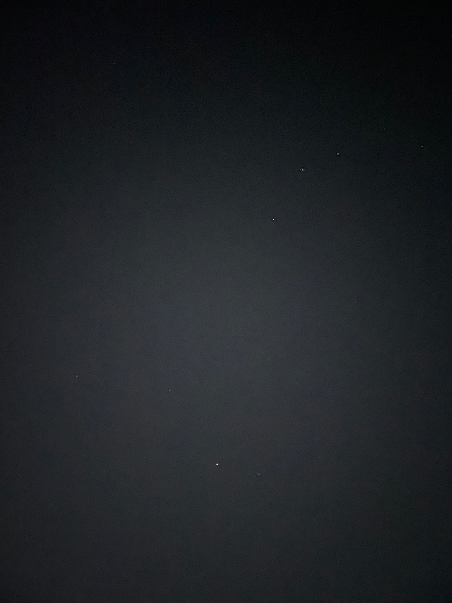
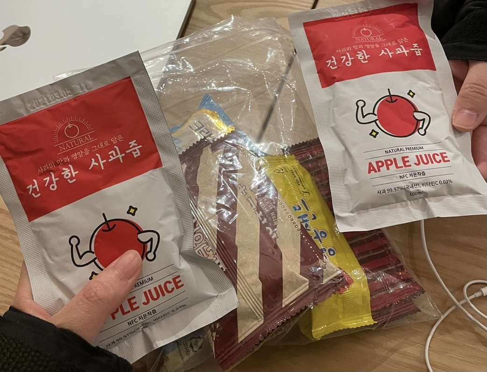

<!doctype html>
<html>
    <head>
        <meta charset="UTF-8">
        <title>HAGUS HARDWARE</title>
        <link rel="stylesheet" type="text/css" href="../../css/pages.css">
    </head>
</html>

<body>
    <header>
        <h3><a href = "../../index.html">HAGUS HARDWARE</a></h3> 
        <ul>
            <li><a href ="../../index.html">ABOUT</a></li>
            <li><a href ="../../TIL.html">TIL</a></li>
            <li><a href ="../../tag.html">TAG</a></li>
        </ul>
    </header>

    <section class="section">
    <div class = "tag_menu">
        <div><a href="#log">log</a></div>
    </div>

    <div id = "tag_list">
        <div class="l_title"><a href = "../../tag.html">log. </a></div>
        <div ><sapn class = "title"><a href = "../../tag.html"><strong>[Serendipity] 뜻밖의 발견 (장소, 시간, 사람들, 이야기)</span><span class="date">2020.4.20</span></strong></a></div>
             <!--content-->
        <p class = "content">
        _</br>
        중간고사는 역시 뭐든 새롭게 느껴지는 기간이다. 이번 중간고사 기간의 나는 나름 특별하게 보내고 있는 듯 하다. </br>
        오늘은 한동 3년 다니면서 가보지 못했던 새로운 곳을 가봤다. 그것도 올해 처음 만난 팀 사람들과 함께!</br>
        전에는 뭐든 새로운 것이 좋았는데 이제는 자꾸만 익숙한 것, 편한 사람들만 찾게 된다. 그러다 보니 새로운<br>
        사람들과 어울리는 것에 대한 부담감이 컸다. 나의 이런 속 마음을 역시 하나님은 아셨나보다. <br>
        새로운 사람들과 낯선 공간에서 잠시동안 달콤한 휴식과 그간 생각의 퓨즈를 끄고 살았던 나에게 <br>
        멈춰서 생각할 수 있는 여유를 허락해 주셨다. <br><br>
        
        <span style="background: lightgray;">별이 잘 보이는 장소</span><br>
        <br>
        <span style="background: lightgray;">구름다리</span><br>
        <br>
        <span style="background: lightgray;">수현 오빠 간식 감사합니다 :)</span><br>
        <br>

        </p>


    </div>

</section>

    
</body>


